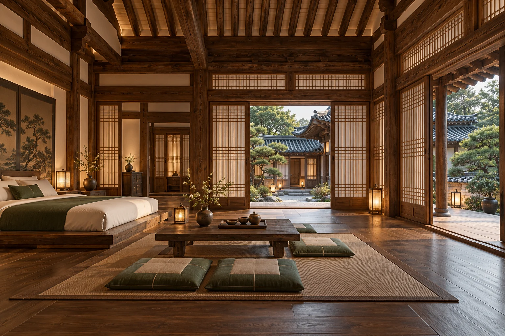
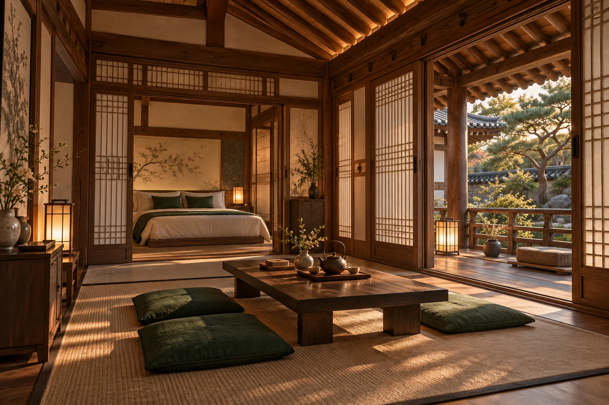
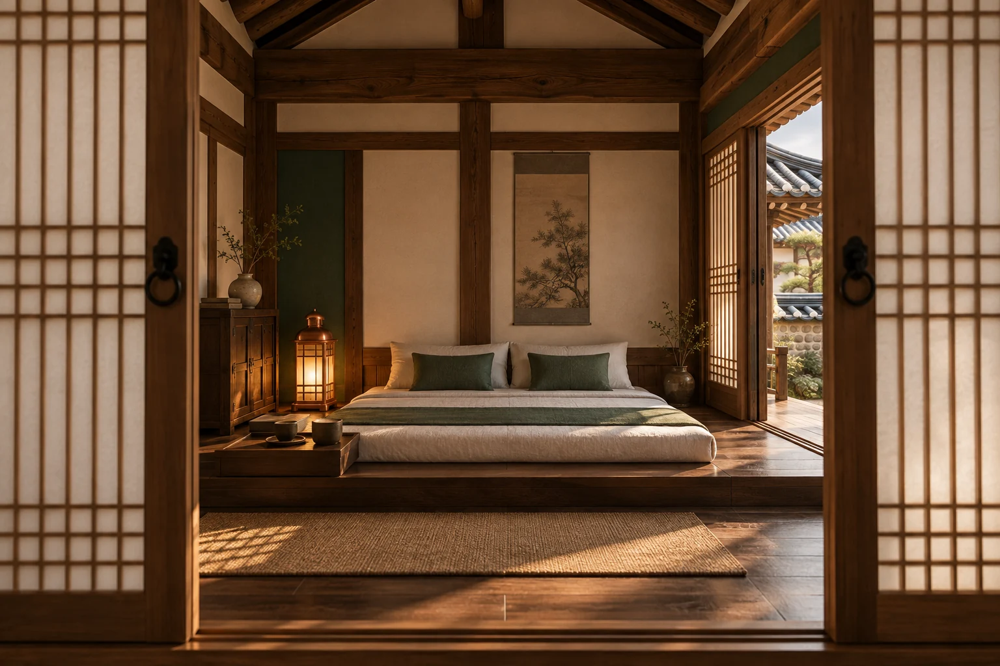

3D CONCEPT · 실제 객실 사진 아님01 / DETACHED HOUSE
별채 (독채)
기준 8인 · 최대 12인
CHAPTER 00 — 머무름의 시작
청주 오창의 가영당한옥문화스테이. 여행의 속도를 잠시 늦추고, 한옥에서의 하루를 계획해 보세요.
숙박 가능 여부 문의하기가영당은 청주 오창에 자리한 한옥문화스테이입니다. 여행의 목적이 휴식이든 새로운 풍경이든, 머무는 시간을 직접 계획할 수 있도록 필요한 정보를 간결하게 담았습니다.
위치 확인하기STAY YOUR WAY
가영당의 실제 객실명과 기준·최대 인원을 안내합니다. 아래 이미지는 한옥의 분위기를 표현한 3D 콘셉트 렌더이며 실제 객실 구조·가구·시설과 다릅니다.

3D CONCEPT · 실제 객실 사진 아님기준 8인 · 최대 12인

3D CONCEPT · 실제 객실 사진 아님기준 3인 · 최대 5인

3D CONCEPT · 실제 객실 사진 아님기준 2인 · 최대 3인
객실명과 인원 정보: 숙박 안내 페이지 기준. 실제 객실 구성, 요금, 예약 가능 여부는 숙소에 문의해 주세요.
아래 사진은 한옥의 분위기를 보여주기 위한 참고 이미지입니다. 가영당의 실제 객실 및 시설 사진은 아닙니다.

도시에서 조금 떨어진 하루.
머무름의 여백을 만나보세요.
YOUR STAY BEGINS HERE
날짜와 인원을 입력하면 문의 문자가 작성됩니다. 전송 후 숙소의 답변으로 가능 여부와 요금을 확인해 주세요.
전화 문의 010-9935-2129 ↗